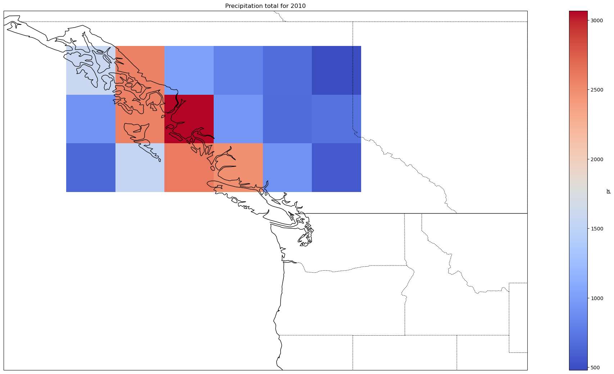
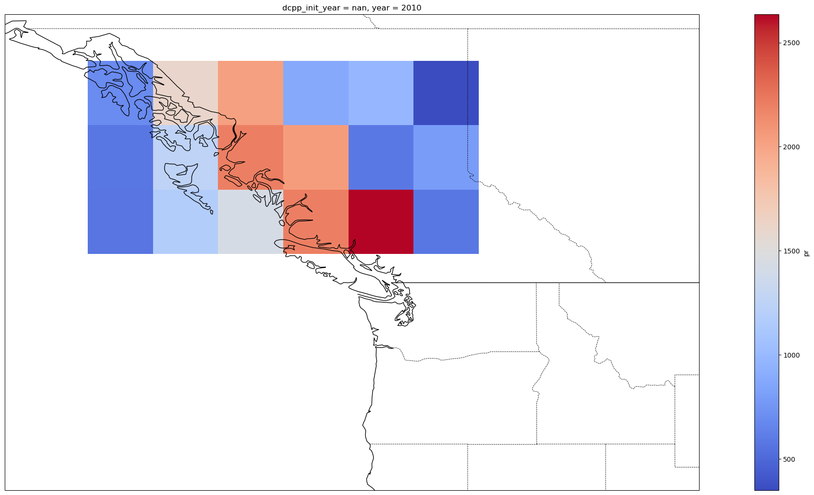

CMIP6 regridding using xemsf#
This notebook show how to regrid several models and datasets to a common grid for intercomparison. It uses
xesmf with model data files that can be downloaded from the
tutorial/tutorial_data folder on our e440 google drive.
As with Tutorial: Loading CMIP historical data the netcdf files should be copied to
~/repos/e440/tutorials/tutorial_data
There are more tutorials on the xesmf website, as well as this Ouranos project and this parallel computing tutorial
Installation#
https://coecms-training.github.io/parallel/case-studies/regridding.html
Download regridding.ipynb from the tutorials folder of our google drive
You’ll need to add the xesmf and esmpy to the e440 environment:
conda install xesmf esmpy
and download the ...bc_dset.nc xarray datasets from the gdrive tutorials/tutorial_data_folder to ~/repos/e440/tutorials/tutorial_data
%matplotlib inline
import matplotlib.pyplot as plt
import cartopy.crs as ccrs
import numpy as np
import xarray as xr
import os
from pathlib import Path
#fp = r"C:\Users\13432\miniconda3\envs\a448\Library\lib\esmf.mk"
#os.environ['ESMFMKFILE'] = fp
import xesmf as xe
import cartopy
Import the netcdf data#
Start by importing the historical data that was sliced from the historical notebook.
home_dir = Path.home()
data_folder = home_dir / "repos/e440/tutorials/tutorial_data"
can_dset = xr.open_dataset(data_folder / 'can_bc_dset.nc')
had_dset = xr.open_dataset(data_folder / 'had_bc_dset.nc')
gis_dset = xr.open_dataset(data_folder / 'gis_bc_dset.nc')
Define the desired resolution#
Following the tutorial from xESMF, we next define the longitude and latitude boxes that we want to regrid to. In this case, we take the lons and lats from the CanESM and create a temporary xarray to store this resolution in.
ds_output = xr.Dataset(
{
'lat': (['lat'], can_dset.lat.to_numpy(), {'units': 'degrees_north'}),
'lon': (['lon'], can_dset.lon.to_numpy(), {'units': 'degrees_east'}),
}
)
ds_output
<xarray.Dataset> Size: 72B
Dimensions: (lat: 3, lon: 6)
Coordinates:
* lat (lat) float64 24B 51.63 54.42 57.21
* lon (lon) float64 48B 225.0 227.8 230.6 233.4 236.2 239.1
Data variables:
*empty*HadGEM Regridding#
Start by regridding the data here for this model following the steps from the xESMF tutorial. First use the regridder class from the library and check the results.
regridder = xe.Regridder(had_dset, ds_output, "conservative")
regridder # print basic regridder information.
xESMF Regridder
Regridding algorithm: conservative
Weight filename: conservative_20x18_3x6.nc
Reuse pre-computed weights? False
Input grid shape: (20, 18)
Output grid shape: (3, 6)
Periodic in longitude? False
Now create the new xarray using the regridder object. This produces the re-gridded HadGEM data
had_out = regridder(had_dset.pr, keep_attrs=True)
Sanity check by plotting the data to make sure the resolution does in fact match that of the CanESM
had_data2010 = had_out.sel(time='2010')
had_precip_data2010 = had_data2010.groupby('time.year').mean('time')*86400*365
had_precip_data2010 = had_precip_data2010.mean('member_id')
fig = plt.figure(1, figsize=[30,13])
ax2 = plt.subplot(1, 1, 1, projection=ccrs.PlateCarree())
ax2.coastlines()
ax2.add_feature(cartopy.feature.BORDERS, linestyle='-', alpha=1)
ax2.set_extent([-140, -110, 40, 60])
resol = '50m'
provinc_bodr = cartopy.feature.NaturalEarthFeature(category='cultural',
name='admin_1_states_provinces_lines', scale=resol, facecolor='none', edgecolor='k')
ax2.add_feature(provinc_bodr, linestyle='--', linewidth=0.6, edgecolor="k", zorder=10)
had_precip_data2010.plot(ax=ax2,cmap='coolwarm')
ax2.title.set_text("Precipitation total for 2010")

GISS Re-grid#
Now regrid this data using the same steps as for the HadGEM.
regridder2 = xe.Regridder(gis_dset, ds_output, "conservative")
gis_out = regridder2(gis_dset.pr, keep_attrs=True)
gis_data1990 = gis_out.sel(time='2010')
gis_precip_data1990 = gis_data1990.groupby('time.year').mean('time')*86400*365
gis_precip_data1990 = gis_precip_data1990.mean('member_id')
fig = plt.figure(1, figsize=[30,13])
ax = plt.subplot(1, 1, 1, projection=ccrs.PlateCarree())
ax.coastlines()
ax.add_feature(cartopy.feature.BORDERS, linestyle='-', alpha=1)
ax.set_extent([-140, -110, 40, 60])
resol = '50m'
provinc_bodr = cartopy.feature.NaturalEarthFeature(category='cultural',
name='admin_1_states_provinces_lines', scale=resol, facecolor='none', edgecolor='k')
ax.add_feature(provinc_bodr, linestyle='--', linewidth=0.6, edgecolor="k", zorder=10)
gis_precip_data1990.plot(ax=ax,cmap='coolwarm')
<cartopy.mpl.geocollection.GeoQuadMesh at 0x16a9fa850>

Write the new files to file#
Write the re-gridded data to file in order to be used later in the plotting process.
write = False
if write:
had_out.load().to_netcdf(data_folder / 'had_regrid.nc')
gis_out.load().to_netcdf(data_folder / 'gis_regrid.nc')
cru_out.load().to_netcdf(data_folder /'cru_regrid.nc')